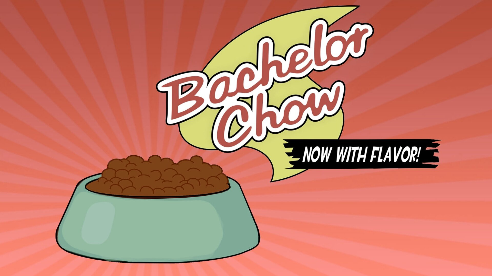

Bachelor Chow

Description
Cheap and now with flavor, Bachelor Chow is the premier food solution for the single man of the future. Just add water!
Ingredients
- 4 pounds boneless beef chuck
- 1 pound salt pork
- 1/2 tsp freshly ground black pepper
- 1/2 tsp kosher salt
- 2 tbsp unsalted butter
- 5 tsp unflavored powder gelation
- 4 cups beef broth
- 2 onions, cut into eighths
- 4 carrots, peeled and roughly chopped
- 2 celery ribs, roughly chopped
- 1 tbsp tomato paste
- 1 tsp anchovy paste
- 1/3 cup all purpose flour
- 1 garlic head, peeled
- 2 bay leaves
- 1/2 tsp black peppercorns
- 1/2 ounce dried prcini mushrooms
- 10 sprigs fresh parsley
- 6 sprigs fresh thyme
- 2 sprigs fresh rosemary
- 1 bottle Burgundy wine
- 1 1/2 cups boiling water
Directions
- Trim excess fat from beef chuck and reserve.
- Chop beef into 2 inch chunks and slice salt pork into 1 inch strips.
- Sprinkle beef with salt and pepper. Let sit at room temp. for 30 minutes.
- Place beef scraps, salt pork, and butter into a roasting pan. Roast fo r 20 minutes at 500 F, or until the fat is rendered and the meat browned.
- Sprinkle gelatin over the beef broth and allow to sit for 6 minutes until the gelation is completely hydrated.
- Once browned, remove beef scraps and salt pork from the roasting pan. Transfer roasting pan with rendered fat to stovetop.
- Add onions, carrots, and celery to roasting pan and saute over medium-high heat until the vegetables are lightly browned.
- Add the tomato and anchovy pastes to the roasting pan and stir to combine. Cook for 3 minutes.
- Sprinkle the flour over the vegetables and residual fat. Mix everything together until a homogenous paste develops coating the vegetables.
- Slowly add the gelatin/broth mix to the pan, stirring constantly.
- Add the garlic, bay leaves, peppercorns, porcini mushrooms, parsley, thyme, and rosemary.
- Add the wine and stir until homogenous.
- Neatly place the chunks of beef in an even layer on top of the vegetables. Make sure the beef isn't entirely submerged in the braising liquid.
- Return the roasting pan to the oven and cook at 325 F for 3 hours. After 90 minutes, flip the pieces of beef and add water if the beef becomes less than halfway submerged.
- Once the beef is tender, remove the roasting pan from the oven. Reserve the pieces of beef in a separate bowl and strain the remaining sauce.
- Regrigerate the beef and sauce for at least 1 hour.
- Once chilled, remove the solidified layer of fat from the sauce and cut the beef chunks into smaller cubes, about 1/2 in in size.
- Over medium-high heat, reduce the sauce until it becomes a thick, graby-like consistency, about 20 minutes. Allow to cool to room temp.
- Spread the beef into an even layer on freeze dryer trays. Pour the sauce onto a separate tray.
- Freeze dry the beef and sauce for 24 hours.
- Once completely dry, remove the beef and sauce from the freeze dryer.
- Break up the sauce into manageable chunks and grind in a food processor until it becomes a fine powder.
- Toss the beef cubes in the sauce powder and serve in your bowl of choice.
- To rehydrate: pour hot water over top of Bachelor Chow and let sit for 5 minutes
Home